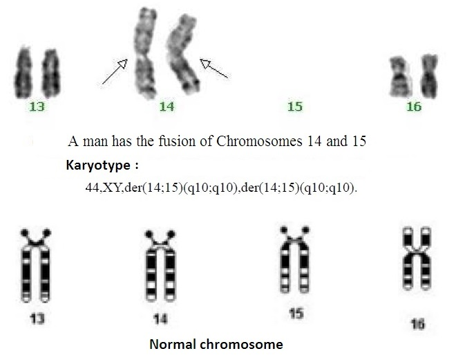

|
三.24对染色体的他们到哪里去了?
III. Where did Those with 24 Pairs of Chromosome go?
通过上面的分析得出这样的概率：如果在200万年中，总保持有200万个古猿人，就有可能因骤变产生一对23条染色体的“科学亚当和科学夏娃”。那么，（1）那些没有产生骤变的古猿人他们是什么样子？（2）他们到哪里去了呢？
We can draw a conclusion from the above analysis: if a population of 2 million ancient man apes continuously existed during the 2 million years, a couple of 23-chromosome “Scientific Adam and Scientific Eve” may be generated by saltation . In that case, (1) What did the ancient man apes without saltation look like? (2) Where did they go?
为了回答第一个问题，我们必须来看产生骤变假说的根源――罗伯逊易位染色体疾病。罗伯逊易位基本都是发生在“近端着丝粒染色体”上，“近端着丝粒染色体”的短臂特别短，被丢失的短臂部分包含的基因很少，因此，患罗伯逊易位染色体疾病的病人，除了存在生殖功能障碍外，大都和正常人没有什么区别。如果丢失的基因太多，胚胎就不会存活。
To answer the first question, we shall refer to the source of the Hypothesis of Saltationism - chromosomal disease of Robertsonian translocation. Robertsonian translocation usually occurs at “subtelocentric chromosomes”, which has a very short arm. The lost short arm contains few genes, so the patients of Robertsonian translocation chromosome disease are generally not different from normal people except for reproductive problems. If there are too many lost genes,even the embryo will not survive.
骤变假说的研究认为，人类2号染色体也是由两条古猿人的染色体，2A、2B，融合而成。由此推论，没有发生骤变的24对染色体的古猿人（或者说是24对染色体的古人）和骤变后产生的23对染色体的人，也就是骤变前的父母和骤变后的子女，在外形上，不应该差别很大。不可能在2个 染色体融合成一个染色体的瞬间，在其他染色体上同时发生很大的变化，并且产生了一些新的基因，将一个浑身是毛的猿人骤变成我们这样的现代人。
The research on the Saltationism hypothesis believes that the Human Chromosome 2 is also derived from Ancient Man Ape Chromosomes 2A and 2B. Inferred thereby, the non-saltated ancient man apes with 24 pairs of chromosomes (or the ancient people with 24 pairs of chromosomes) and the people with 23 pairs of chromosomes generated by saltation (i.e. the parents before saltation and the children after saltation) shall be alike in appearance. It is impossible for other chromosomes to have significant changes and for the human body to generate some new genes upon the fusion of the 2 chromosomes, which suddenly changed a hairy ape into a modern human being.
没有骤变的他 们的父母，一定和骤变后产生的子女――“科学亚当和科学夏娃”差别不大，也一定和我们的差别不大。因为骤变前、后的两代，有着相同的其它21对常染色体、X染色体、Y染色体。但是，骤变前、后两代的他们，一定和现在的猩猩有很大的差别。
The parents without saltation and their children with saltation, i.e. “Scientific Adam and Scientific Eve”, had little difference between each other or perhaps not more than that with us. It is because that the two generations both before and after the saltation have 21 pairs of autosomes, X chromosomes and Y chromosomes which are similar. However, the two generations both before and after saltation must be very different from the modern apes.
这里就带出了第二个问题：这些具有24对染色体、和我们（我们和“科学亚当和科学夏娃”的DNA差别应该在千分之0.5左右）相似的古猿人，他们到哪里去了？他们决不会是目前存在的猩猩们。
So here is the second question: Where are the ancient man apes with 24 pairs of chromosomes who were similar to us (with about 0.5 in one thousand of DNA difference between the “Scientific Adam and Scientific Eve” and us)? They will never be the chimpanzees still existing today.
让我们对比一下未骤变的古猿人和“科学亚当和科学夏娃”，在数量上存在的概率。在200万年中，如果古猿人的平均寿命是40年，那么200万年中，就出生了5万代 。平均每40年更新一代，每代要保持有200万个古猿人，总共要出生5万×200万等于1000亿个古猿人。他们对应的，仅仅是“科学亚当和科学夏娃”俩个人。
Let us be quantitative and calculate the probability of this occurrence by comparing the ancient man apes without saltation with “Scientific Adam and Scientific Eve”. If the average lifespan of the ancient man apes were 40 years, 50,000 generations existed during the 2 million years. If one generation was renewed by an average of 40 years, every generation shall have 2 million ancient man apes, i.e. 50,000 x 2,000,000=100,000,000,000 (ancient man apes). They are matched only to the couple of “Scientific Adam and Scientific Eve”.
能够想象这样的结果吗：在25万年前左右，骤变出来的“科学亚当和科学夏娃”，从他们两个人繁衍出了全世界的70亿人，而他们这些24对染色体的古猿人（或古人）却消失了，这真是不可思议、不可能发生的事情。可以想象，如果当时在非洲尼罗河的两岸，同时生活着两百万的古人猿、两百万的黑猩猩、两百万的红毛猩猩和两个“科学亚当和科学夏娃”，古人猿和“科学亚当和科学夏娃”DNA最接近，远比猩猩们有更强的生命力，他们到哪里去了？为什么仅仅是他们消失了？
Could you imagine the following result: about 250,000 years ago, 7 billion people were bred from the two persons - “Scientific Adam and Scientific Eve” generated by saltation, but the ancient man apes with 24 pairs of chromosome (or ancient men) disappeared. These events are beyond our imagination and seem quite impossible We can imagine that two million ancient man apes, two million chimpanzees, two million orangutans and “Scientific Adam and Scientific Eve” inhabited both sides of the Nile in Africa. The ancient man apes were closest to “Scientific Adam and Scientific Eve” in terms of DNA and vitality than other orangutans. Where are they now? Why is it that they alone disappeared?
从全世界人身上的3个标记：789个码的第一标记、729个码的Y染色体亚当标记、16569个码的线粒体夏娃原始码标记，可以看到人类没有发生任何进化。人类自诞生以来，就是我们现在这个样子，这是从DNA解码中所看到的。如果当时有大量24对染色体的古人，他们的 外貌必定和科学亚当、科学夏娃一样，也和我们一样。也一定会有大量的他们存留在现今世界上，和我们继续生活在一起。
From the 3 markers possessed by all human beings in the world,(i.e.. the first mark with 789 DNA codes, Y-chromosome Adam’s mark with 729 DNA codes and mitochondrial Eve’s original mark with 1656009 DNA codes),we can say with assurance that human beings have not gone through any evolution. Since birth, human beings have retained their original physique as proven by the DNA decoding. If there were many ancient human beings with 24-pairs of chromosomes, their physique must be identical with those of Scientific Adam and Scientific Eve as well as ourselves. There must be lots of them who still exist in the modern world and live among us.
另外，如果现代人的2号染色体是由随机融合而来，这个随机融合也必然会发生在其它的染色体上，其类型应该有28种或更多。然而至今，只是说“发现了2号染色体融合”，那么，其它的那些类型的人又到哪里去了呢？
In addition, if the Chromosome 2 of modern human beings was generated by fusion at random, such fusion at random must occur in other chromosomes with ?28 types or more. However, so far the only report is about “the discovery of Chromosome 2 fusion”. So where are the other types of human beings?
四．22对染色体的人会取代23对染色体的人们吗？
IV. Could Individuals with 22 Pairs of Chromosomes Replace Those with 23 Pairs of Chromosomes?
1．现代人中有22对染色体的人吗？
2. Are there any individuals with 22 pairs of chromosomes in modern times?
绝大多数人不知道，在世界上的确存在着22对染色体的人们。
The majority of us do not realize that there are people with 22 pairs of chromosomes.
（1）来自中国的报告：
(1) Report from China:
2010年，在中国中部，一位25岁的男子的妻子产下一个患脑瘫的男婴，男婴在6个月的年龄时死亡。经检测，发现此男婴是一位染色体罗伯逊易位病的患者，只有45条染色体，因此检查了男婴父母和祖父母的染色体核型[注释2]。
In 2010, in Central China, the wife of a 25-year-old man gave birth to a boy with cerebral palsy. The boy died at the age of 6th month. Laboratory test showed that the boy was a patient with chromosome Robertsonian translocation and has only 45 chromosomes. So his parents and grandparents had karyotype tests [see Note 2].
经检查，发现男婴的母亲是正常的23对染色体的女子，男婴的父亲“表型正常”（normal phenotype），染色体核型为：44,XY,der(14;15)(q10;q10),der(14;15)(q10;q10)（衍生染色体病）。“表型正常”的意思是他看起来完全是一位正常人，正因为如此，他和一位正常女人结了婚。而染色体核型表明，他的14号染色体和15号染色体融合为了一对染色体，因此他是一个只有22对（44条）染色体的男人。男婴祖父、母系表兄妹结婚，他们都是45条染色体的人。
The laboratory test showed the boy’s mother was a normal woman with 23 pairs of chromosomes, while his father was phenotype-normal with the chromosome karyotype of 44,XY, der(14;15)(q10;q10),der(14;15)(q10;q10) （The disease of derivative chromosome）. “Normal phenotype” means that he looks exactly like a normal person. So he was married to a normal woman. However, chromosome karyotype shows that his Chromosomes 14 and 15 merged into a pair of chromosomes. So he has 22 pairs (or 44) chromosomes. The grandfather of the boy are cousins, who both had 45 chromosomes.
“中国发现的首个22对染色体的人的14号染色体，是父母的15号染色体与14号染色体融合为一对染色体”
“The Chromosome 14 of the first Chinese person found to have 22 pairs of chromosomes is derived from the fusion of Chromosomes 14 and 15 of the parents.”

图7-6 22对染色体人的染色体照片
Figure 7-6 Photo of A Person with 22 Pairs of Chromosomes
中国科学院院士、医学细胞遗传学家夏家辉教授确认，此男士为中国发现的首个22对染色体的病态人。
Professor Xia Jiahui, the Academician of Chinese Academy of Sciences and a medical cytogeneticist, confirmed that this man is the first Chinese found to have 22 pairs of chromosomes.
(2) 9个22对染色体人的报告：
(2) 9 Reports on the Individuals with 22 Pairs of Chromosomes:
法国生物学家Iain D O’Neill博士2010年发表了一个研究报告：“罗伯逊易位同型结合体的调查”（Homozygosity for constitutional chromosomal rearrangements: a systematic review with reference to origin, ascertainment and phenotype）[注释3]他搜索了1970年到2009年期间的、包含世界各主要医学类的资料库，共发现了9个22对染色体人的报道，其中包含5男4女。
Dr. Iain D O’ Neill, a French biologist, published a research report in 2010: Homozygosity for constitutional chromosomal rearrangements: a systematic review with reference to origin, ascertainment and phenotype(Reference
3). He searched all the major medical databases in the world dated from 1970 to 2009, and discovered 9 reports on the individuals with 22 pairs of chromosomes, including 5 men and 4 women.
从融合衍生的染色体来看，有3个男子和3个女子是13号染色体和14号染色体的融合为一对染色体。其他两个男子，一个是14号染色体和21号染色体的融合；一个是14号染色体和22号染色体的融合。另外的一个女子是14号染色体和21号染色体的融合。
From the merged and derived chromosomes,3 men and 3 women’s Chromosomes 13 and 14 have merged into one pair of chromosomes. For the other two men, one has the fusion of Chromosomes 14 and 21, and the other has the fusion of Chromosomes 14 and 22. The other woman has the fusion of Chromosomes 14 and 21.
这9个人的外观和行为与普通人没有区别，即“表型正常”。他们的父母大都有亲缘关系，并且都是45条染色体的人。
The 9 individuals are not different from normal persons in appearance and behavior, i.e. normal phenotype. Their parents are mostly blood relatives with and all of them are individuals with 45-chromosome.
这9个人中，有3个人是一家人，几位医学专家特别对他们做了研究，并发表了一篇报告：“45条染色体的父母和他们3个22对染色体的孩子们（意译）” [注释4]。
Among the 9 persons, 3 come from the same family. The medical experts carried out research on them and published a report: Homozygosity for a Robertsonian translocation (13q14q) in three offspring of heterozygous parents（Reference 4）.
这1个女儿、2个儿子，都是13号染色体和14号染色体的融合。他们的父母是表亲（cousinsa）,而且都是45条染色体的罗伯逊易位“t(13，14)”的患者。其中一个女子与一个23对染色体的正常男子结婚，生育了一个儿子，是45条染色体的罗伯逊易位“t(13，14)”的患者。
The 1 daughter and 2 sons all have the fusion of Chromosomes 13 and 14. Their parents are cousins and 45-chromosome Robertsonian translocation “t (13, 14)” patients. Among them, a woman got married to a normal man with 23 pairs of chromosomes and gave birth to a son, who was a 45-chromosome Robertsonian translocation “t (13, 14)” patient.
这1个女儿、2个儿子，都是13号染色体和14号染色体的融合。他们的父母是表亲（cousinsa）,而且都是45条染色体的罗伯逊易位“t(13，14)”的患者。其中一个女子与一个23对染色体的正常男子结婚，生育了一个儿子，是45条染色体的罗伯逊易位“t(13，14)”的患者。
至今，从全世界的文献记录中，仅仅看到了这10个22对染色体的人。可以看出，其概率是十分微小。
So far, only 10 persons with 22 pairs of chromosomes are documented in the world literature. Therefore, the probability is extremely small.
1. 会形成22对染色体人的种群吗？
2. Can Individuals with 22 Pairs of Chromosomes developed into a race?
从上面的资料中，可以看到，世界上的确有极少的22对染色体的人存在，但他们都是第一代的22对染色体的人，还没有发现过从22对染色体人出生的22对染色体的子女。
According to the above data, there indeed exist very few people with 22 pairs of chromosomes. However, they are all the first generation of the people with 22 pairs of chromosomes. So far, no children born from these individuals with 22 pairs of chromosomes have been found.
很难确定出22对染色体人占全世界人口的比例，但一定是很小、很小。染色体病的检测已经非常普遍，如果22对染色体人占全世界人口的比例不是很小，就不会有这么少的病例报告。
Though it is hard to be exact, the percentage of the people with 22 pairs of chromosomes must be very small when compared to the total population of the world. The test for chromosomal diseases has become very common. So there won’t be so few case reports if the percentage of the people with 22 pairs of chromosomes is not very small when compared with the total population in?? the world.
在美国年龄大于35岁产妇必做唐氏筛查，35岁以 上产妇的比例大约有5%左右，唐氏筛查必须要确定染色体对数，因此可以发现22对染色体的人。中国城市中，产妇唐氏筛查的覆盖率为50％左右，还要加上习惯性流产、不孕症的染色体检查，染色体病的检测比例一定大于50%。中国每年出生人口数为1千4百万左右（出生率1%），城市人口约占总人口的40%，每年至少要筛查近3百万以上胎儿的染色体，唐氏筛查已经推广了十年以上，但是至今仅有一例的报告。那么中国在大约3千万的染色体检查中，只发现了一例。考虑漏报，拟估计每出生2千万个婴儿，才会有一个22对染色体的人。按此比例推算，目前在全世界，大约有几百个22对染色体的人和我们生活在一起。
In the United States, all pregnant women aged over 35 which accounts for about 5% of the total?? Should get the Down's Syndrome Screening. The screening will determine the number of chromosome pairs, thereby identify individuals with 22 pairs of chromosomes. In Chinese cities, the coverage of pregnant women’s Down's Syndrome Screening is about 50%. China has about 14 million newly born babies (with birth rate of 1%) every year. The urban population accounts for 40% of the entire population in China. Over 3 million embryos receive chromosomal screening each year. During the ten years of promoting Down's Syndrome Screening, no case has been reported so far. Among about 30 million chromosomal tests, China has found only report of just one case. Taking into consideration of error of omission, one person with 22 pairs of chromosomes is born among every 20 million babies. Using this incidence for our calculation, it is inferred that there are about a few hundreds of individuals with 22 pairs of chromosomes living among us.
因为22对染色体的人“表型正常”，除了检测他们染色体的办法外，无法将他们与正常人区分出来，因此22对染色体的人，无法有意地去寻找22对染色体的伴侣，去生产22对染色体的孩子。即使偶然地产生一个第二代的22对染色体的人，他们同样也无法在茫茫人海中，恰好遇到一位22对染色体的伴侣，并且以下各代都会有这样的机会。
Since individuals with 22 pairs of chromosomes are “phenotype-normal”, it is hard to distinguish them from the normal people unless by way of chromosomal test. Therefore, the individuals with 22 pairs of chromosomes are unable to intentionally seek spouses with 22 pairs of chromosomes and give birth to children with 22 pairs of chromosomes. Even if a second-generation person with 22 pairs of chromosomes is born by accident, it is also impossible for him or her to meet a spouse with 22 pairs of chromosomes from vast ocean of people. It is also impossible for following generations to have this chance.
总之，长期产生和保持22对染色体的人群是不可能的（更何况这是一种病态）。因此，至今仍没有发现一个第二代的22对染色体的人，更没有22对染色体的族群出现。
In a word, it is impossible to produce and maintain a population with 22 pairs of chromosomes (let alone in a abnormal disease state). Therefore, neither a single second-generation individual with 22 pairs of chromosomes nor a population with 22 pairs of chromosomes has yet been found.
20几万年来，22对染色体的人没有形成新人种族群。可以肯定地说，即使再过几百万年，也不会发生22对染色体的人，去取代了现今70亿的23对染色体的人。您同意这个结论吗？
For over 200,000 years, no new human race composed of individuals with 22 pairs of chromosomes have been formed. It is sure that even millions years later, the people with 22 pairs of chromosomes will not replace the present 7 billion people with 23 pairs of chromosomes. Do you agree with that?
2. 22对染色体的人不能算是新的人种
3. Individuals with 22 Pairs of Chromosomes Cannot be Regarded as A New Human Race
22对染色体的人只是“表型正常”的染色体病人，他们和正常人的不同，仅仅是失去了很少量的DNA和其中包含的基因，从染色体病理学来看，他们都是病人。染色体短臂缺失会产生一些疾病，有关5号、10号、15号、18号短臂缺失的病例都有报道。
The individuals with 22 pairs of chromosomes are only “phenotype-normal” patients with a chromosomal disease. They differ from normal people by having loss of very few DNAs and the genes contained therein. According to chromosomal pathology, they are all considered patients. Loss of chromosome short arms may lead to some diseases. Cases about short arm loss of Chromosomes 5, 10, 15 and 18 have been reported.
中国的一篇报告指出，医疗专家发现了一位15号染色体短臂缺失的婴儿，患上了婴儿型慢性粒细胞白血病的病例[注释5]，因此，判断 “在15号染色体短臂上可能存在与慢性粒细胞白血病发病有关的基因”。仅仅靠基因丢失，只能产生病人，而不会产生新的人种，现在如此，过去也应该如此。
The report in China pointed out that medical experts discovered a baby with a short arm loss at Chromosome 15 and with infantile chronic myelogenous leukemia [see reference 5]. Therefore, it is thought that “the short arm of Chromosome 15 may have genes etiologically related to infantile chronic myelogenous leukemia”. Just the loss of genes can only produce patients instead of a new human race. This is true now and has to be true in the past.
4. 23对染色体的人会取代24对染色体的猿人吗?
4.23 Will the Individuals with 23 Pairs of Chromosomes Replace The Ancient Man Apes with 24 Pairs of Chromosomes?
骤变前的父母与骤变后的子女，在形体不应该有大的区别。作为极少数的23对染色体新的类群，在自然交配中，只要与大多数24对染色体的类群个体有交配发生，就会产生47条染色体的后代，这个参与交配的23对染色体人的遗传效果就消失了。因此，即使产生少量的23对染色体的个体，也会几代之后迅速湮灭，决不会取代大多数的群体。
The parents before saltation and the children after saltation should not be very different in physical appearance.
The very small racial population with 23 pairs of chromosomes may have 47- chromosome offsprings by mating with the racial individuals with 24 pairs of chromosomes. But the genetic effect of the individuals with 23 pairs of chromosomes would disappear. Therefore, even if a small number of individuals with 23 pairs of chromosomes were produced, they may annihilate future generations later rather than replace the majority of population.
有人会说，我们依据现在的染色体易位疾病的情况，来对比“23对染色体的人取代24对染色体的猿人”的假定适合吗？我们并不知道那时的情况啊？
It may be asked whether it is appropriate to infer the present chromosome translocation diseases from the hypothesis that “the people with 23 pairs of chromosomes replace the ancient man apes with 24 pairs of chromosomes”.since we do not know the situations during the old times.
是的，我们不知道那时的情况。然而，做出“23对染色体的人取代24对染色体的猿人”这个假定本身，就是依据现代染色体易位疾病的状况。显然，提出这个假设的人们同样不知道20几万年前的情况。
Yes, we do not know the situation during the old times. However, the hypothesis that “the people with 23 pairs of chromosomes replace the ancient man apes with 24 pairs of chromosomes “is based on the modern chromosome translocation diseases. Obviously, the people reaching the hypothesis also know nothing about the situations over 200,000 years ago.
综合上述对于骤变论产生的基础的分析，我们完全有理由不相信“骤变论”的假说，不相信有“23对染色体的人因骤变取代了24对染色体的猿人”的可能。被广泛传播的“上帝的语言”一书中，认为现代人是由猿人骤变来的，完全是没有根据的假想。
By summarizing the above analysis as grounds for Saltationism, we have many reasons to deny the hypothesis of Saltationism and also the possibility that “the people with 23 pairs of chromosomes replace the ancient man apes with 24 pairs of chromosomes by saltation”. The belief that modern human beings have been generated from the man apes by saltation is widely popularized by the book The Language of God. This is a completely groundless hypothesis.
注释：
Reference
1. The phenotype is "the total of everything that can be observed or inferred about an individual." ，Theodosias Dobzhansky 1962, Mankind Evolving. New Haven: Yale University p. 41-42.
2. Bo Wang, et al. ,Case Report: Potential Speciation in Humans Involving Robertsonian Translocations，Biomedical Research 2013; 24 (1): 171-174
3. Iain D O’Neill，Homozygosity for constitutional chromosomal rearrangements: a systematic review with reference to origin, ascertainment and phenotype，Journal of Human Genetics 2010，55, 559–564.
4.Martinez-Castro, et al., A. Homozygosity for a Robertsonian translocation (13q14q) in three offspring of heterozygous parents. Cytogenet. 1984，Cell Genet. 38, 310–312.
5. Zuo Yingxi, et al., “15 号染色体短臂缺失性婴儿型慢性粒细胞白血病一例”, Chin J Pediatr，January 2004 , Vol 42 , No. 1）
|